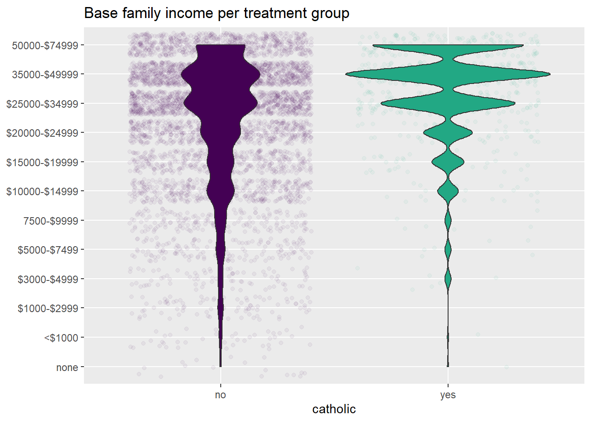
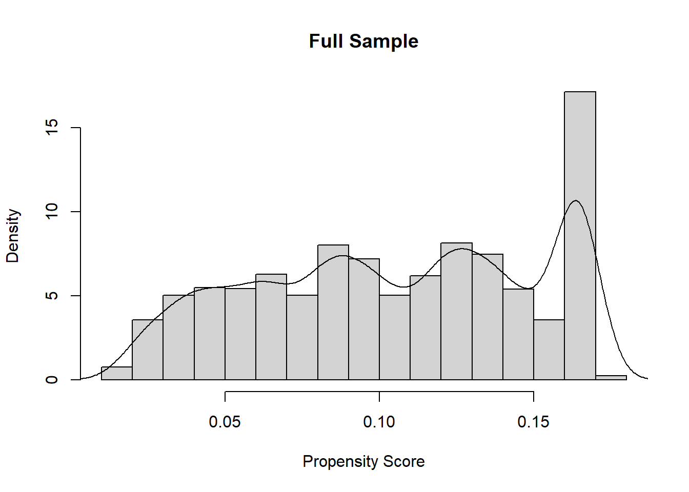
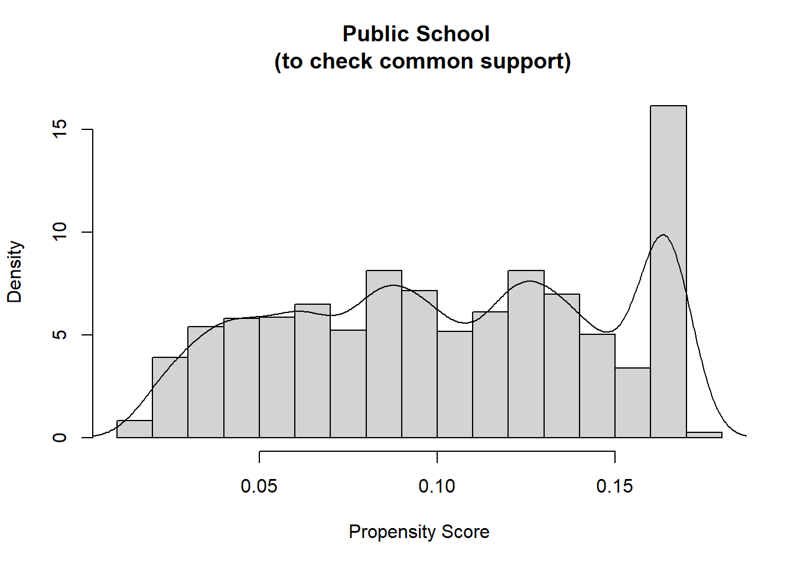
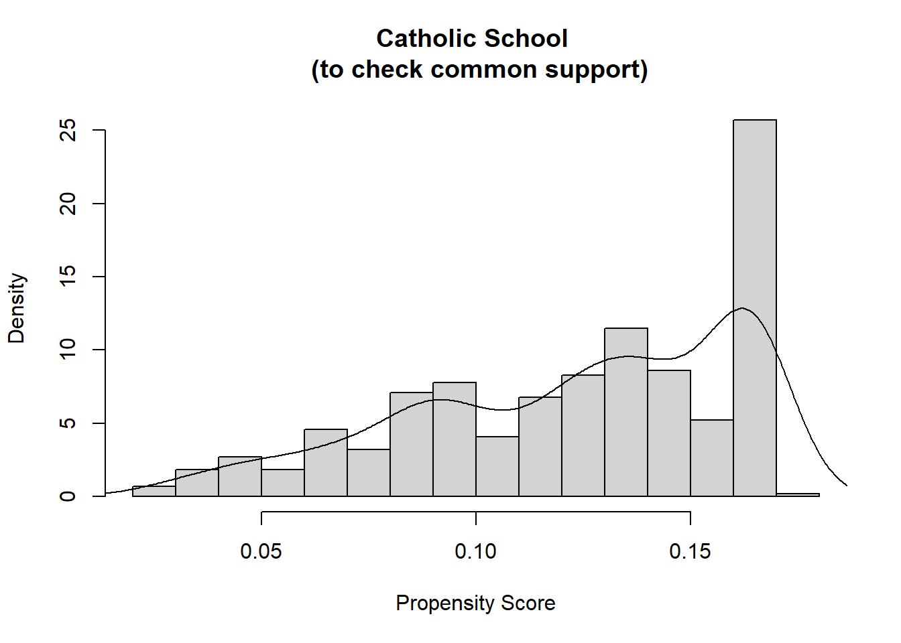
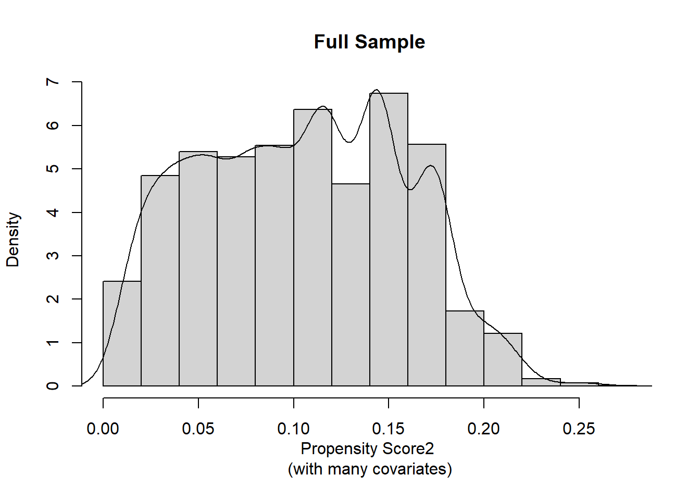
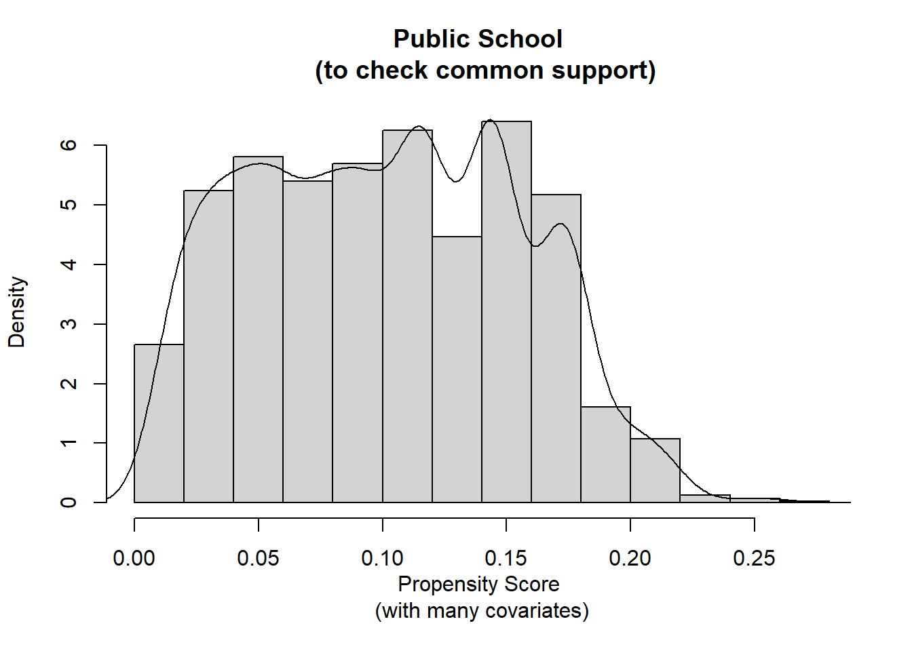
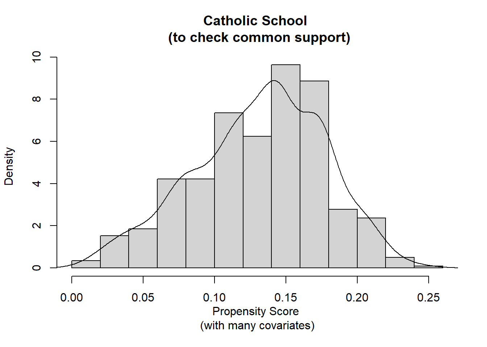

Part 10 Propensity Score Analysis 1: The underlying logic
In this unit, we follow along with Chapter 12 of Murnane and Willett (2011) in their explanation of how we can deal with selection bias. Along the way, we practice using for-loops and some functions from Tidyverse.
Background. Murnane and Willett begin their chapter by showing how we can use stratification on a confounding covariate to reduce some of the bias in the estimate of the causal effect. However, we see that we still have some imbalance and that there are other confounders in our data set that we should use in our model. We practice generating a strata based on two covariates, with the number of strata being the product of the number of levels in the two factors. We soon recognize the problem of data sparseness as we slice up the data into more and more strata. This lowers statistical power and increases the likelihood that idiosyncrasies within a stratum will pull the estimate in their direction. And this is with only two covariates—we have many more that we could use. M & W also showed in their chapter a possible fixed-effects model that does not require equal intervals between the factor levels, but we soon see that it assumes that the effect of the treatment (being in Catholic school) is the same across the these categories, so again, we’re losing some valuable information about the conditional effect. With this, M & W then conducted regression, specifying the covariate (income) as a numeric interval-scale variable, which requires the statistical assumption of linearity be met. This model seemed okay (with this set of data). With regression, we can obtain greater precision in estimating, and controlling for, the confounding variables’ effects by including polynomials in the model. We can also add more covariates, if we have access to them. However, we soon face the same problem with data sparseness that we had when we created multiple strata. With this, we see the value of estimating propensity scores.
A familiar method for estimating the likelihood of group membership is logistic regression. We use this to estimate each person’s propensity of being in the treatment group given a set of covariates. We can then use these propensity scores (using one of several methods) to then estimate the conditional average causal effect of the treatment. We hope we can arrive at a propensity-score model that fits the data as best as possible. If we can also argue that there is little omitted variable bias (which is often not possible) and we have a well-fitting propensity-score model, we’re in good shape to use those propensity scores.
One way to use these propensity scores is to create strata, just as we did with a single covariate, and then estimate the effect in each stratum. We can then pool these strata’s estimated effects, weighting each by their stratum size, to estimate the average treatment effect (ATE) or the average effect on the treated (ATT; AKA TOT). In this lesson, we do not conduct the formal analysis57, but we mess around with stratification, balance statistics, and data wrangling.
10.1 Import the Data and Prepare for Analysis
The data were available as a STATA data set. Let’s use the foreign package (R Core Team, 2020) to import the STATA data file. We can use this code to read in the data from our local directory, check for missing data, and examine the structure.
library(foreign)
ca <- read.dta("ch12_catholic.dta")
apply(ca, 2, function(x){sum(is.na(x))})There are 25 columns of data. The question predictor of interest is catholic, which is yes if the student attended a Catholic school and no if they attended public school. In this unit, we’ll use Grade 12 mathematics achievement-test scores, math12, as the outcome variable.
There are many covariates. Let’s use 17 of them and save their names to an object for later use.
covnames <- c("female", "race", "white", "black", "hisp", "api",
"nativam", "parmar8", "faminc8", "fathed8", "mothed8", "fhowfar",
"mhowfar", "fight8", "nohw8", "disrupt8", "riskdrop8" )Let’s take a look at the structure of these data:
str(ca[, c("math12", "catholic", covnames)])## 'data.frame': 5671 obs. of 19 variables:
## $ math12 : num 49.8 59.8 50.4 45 54.3 ...
## $ catholic : Factor w/ 2 levels "no","yes": 2 2 2 2 2 2 2 2 2 2 ...
## $ female : Factor w/ 2 levels "no","yes": 1 1 2 2 2 2 1 1 1 1 ...
## $ race : Factor w/ 5 levels "api","hispanic",..: 4 4 4 4 4 4 4 4 4 4 ...
## $ white : Factor w/ 2 levels "no","yes": 2 2 2 2 2 2 2 2 2 2 ...
## $ black : Factor w/ 2 levels "no","yes": 1 1 1 1 1 1 1 1 1 1 ...
## $ hisp : Factor w/ 2 levels "no","yes": 1 1 1 1 1 1 1 1 1 1 ...
## $ api : Factor w/ 2 levels "no","yes": 1 1 1 1 1 1 1 1 1 1 ...
## $ nativam : Factor w/ 2 levels "no","yes": 1 1 1 1 1 1 1 1 1 1 ...
## $ parmar8 : Factor w/ 6 levels "divorced","widowed",..: 6 6 6 6 6 6 6 6 6 1 ...
## $ faminc8 : Factor w/ 15 levels "none","<$1000",..: 10 10 10 10 11 7 10 10 10 8 ...
## $ fathed8 : Factor w/ 8 levels "not finish hs",..: 2 8 1 8 2 1 2 6 3 2 ...
## $ mothed8 : Factor w/ 8 levels "not finish hs",..: 2 8 7 8 2 2 2 3 3 4 ...
## $ fhowfar : Factor w/ 7 levels "not finish hs",..: 4 4 4 5 5 5 4 5 5 5 ...
## $ mhowfar : Factor w/ 7 levels "not finish hs",..: 4 5 4 5 5 5 4 5 5 5 ...
## $ fight8 : Factor w/ 3 levels "never","once or twice",..: 1 1 1 1 1 1 1 2 2 3 ...
## $ nohw8 : Factor w/ 2 levels "no","yes": 1 1 1 1 1 1 1 1 1 2 ...
## $ disrupt8 : Factor w/ 2 levels "no","yes": 1 1 1 1 1 1 1 2 2 2 ...
## $ riskdrop8: int 1 0 0 1 1 1 0 1 0 1 ...There are 5671 rows in the data. Most of the columns are coded as factors, including the treatment variable of interest as our primary question predictor, catholic. Let’s create a numeric dummy variable for catholic, and call it catN.
ca$catN <- as.numeric(ca$catholic)-1 Let’s look at the frequency and the proportion:
summary(ca[ , c("catholic", "catN")])## catholic catN
## no :5079 Min. :0.0000
## yes: 592 1st Qu.:0.0000
## Median :0.0000
## Mean :0.1044
## 3rd Qu.:0.0000
## Max. :1.0000Of the 5671 students, 592 (10.44%) went to catholic school.
10.1.1 Creating a numeric version of the base-income variables
To be consistent with the example in the book, we can create a numeric version of the income variable. This numeric version of the 15-factor faminc8 variable, was described in Footnote 8 (p. 291). We should also remember that the sample excluded any observations with income greater than $74,999.
ca$faminc8N <- as.numeric(ca$faminc8)This ordinal variable cannot be treated as having equal intervals.
In the book (Footnote 25, p. 308), the authors recoded faminc8 so that the values are actual mid-values of income in $1000 units. The authors used this numeric version of the income variable in regression. We can also use it when we investigate covariate balance.
ca$inc8<- ifelse(ca$faminc8N == 1, 0,
ifelse(ca$faminc8N == 2, 0.5,
ifelse(ca$faminc8N == 3, 2,
ifelse(ca$faminc8N == 4, 4,
ifelse(ca$faminc8N == 5, 6.25,
ifelse(ca$faminc8N == 6, 8.75,
ifelse(ca$faminc8N == 7, 12.5,
ifelse(ca$faminc8N == 8, 17.5,
ifelse(ca$faminc8N == 9, 22.5,
ifelse(ca$faminc8N == 10, 30,
ifelse(ca$faminc8N == 11, 42.5,
ifelse(ca$faminc8N == 12, 62.5,
NA))))))))))))
summary(ca[,c("faminc8N","inc8")]) ## faminc8N inc8
## Min. : 1.000 Min. : 0.00
## 1st Qu.: 8.000 1st Qu.:17.50
## Median :10.000 Median :30.00
## Mean : 9.526 Mean :32.66
## 3rd Qu.:11.000 3rd Qu.:42.50
## Max. :12.000 Max. :62.50Unlike the original categorical variable, the values in the inc8 variable represent actual dollars, making it useful for regression models that assume linearity.
10.1.2 Creating some custom functions
Here’s a custom function for covariance balance that we’ve used in a previous lesson:
select.diff <- function(x, grp) {
mby<- unlist(by(x, grp, mean, na.rm=T))
vby<- unlist(by(x, grp, var , na.rm=T))
mc <- mby[1]
mt <- mby[2]
vc <- vby[1]
vt <- vby[2]
B <- (mt-mc)/sqrt((vt+vc)/2)
R <- vt/vc
out <- summary(lm(x ~ grp))
out2 <- c(out$coef[2, c(1:2, 4)], B, R)
names(out2)<- c("Mean.Diff", "Std.Error", "p-value", "Std.Mean.Diff", "Var.Ratio")
out2
}Let’s also create a quick custom function for the mean that rounds the result to three decimal places. This is only to make our output look a little easier to see:
MyMean <- function(x) {Mean <- round(mean(x, na.rm = TRUE),3) }10.2 Stratifying on a Covariate
If we take a look at the distribution across categories of the base-family-income covariate, we can see that there are altogether more students from higher income families in the sample. We can also see that this pattern is more extreme in the treatment group.
library(ggplot2)
ca %>%
ggplot(aes(catholic, faminc8N)) +
geom_violin(show.legend = F, aes(fill = catholic)) +
scale_fill_viridis_d(end = .6) +
geom_jitter( show.legend = F, aes(color = catholic), alpha = .05) +
scale_color_viridis_d(end = .6) +
labs(title = "Base family income per treatment group") +
ylab(NULL) +
ylim(levels(ca$faminc8)[1:12])
Based on this and based on what we already expect from our understanding of the context, a covariate that is very likely to bias the estimate of a causal effect is family income. In this data set, faminc8 was the base-year family income, when the student was in Grade 8. Let’s examine the balance of the numeric version of this covariate on the treatment group variable.
10.2.1 Checking the imbalance in the treatment status
Here’s the by-group estimates on our numeric version of this covariate inc8:
with(ca, by(inc8, catholic,
FUN = MyMean))## catholic: no
## [1] 31.855
## ------------------------------------------------------------
## catholic: yes
## [1] 39.535In Tidyverse, we can use the dplyr package’s (Wickham, François, et al., 2021) group_by() function to split the data set by the treatment variable, then call the summarize() function, within which we can use our custom function:
library(dplyr)
ca %>%
group_by(catholic) %>%
summarize(M = MyMean(inc8))## # A tibble: 2 x 2
## catholic M
## <fct> <dbl>
## 1 no 31.9
## 2 yes 39.5Here’s the balance:
bal <- select.diff(x = ca$inc8, grp = ca$catholic)
round(bal, 3)## Mean.Diff Std.Error p-value Std.Mean.Diff Var.Ratio
## 7.680 0.746 0.000 0.457 0.889The covariate is imbalanced on the predictor of interest. Families with students who went to Catholic school had higher incomes. With this, we should not trust the naïve estimate of 3.89 points on 12th grade mathematics achievement.
naive <- lm(math12 ~ catN, data = ca)
coef(summary(naive))## Estimate Std. Error t value Pr(>|t|)
## (Intercept) 50.64465 0.1322954 382.814879 0.000000e+00
## catN 3.89486 0.4094621 9.512136 2.690989e-2110.2.2 Creating the strata from the covariate
Let’s create the three strata from income8 by collapsing the 12 levels into 3 levels. Let’s check out our existing levels first. There are actually 15 levels, but as M & W reported, they had previously been removed from the analytic sample, which is why there are no observations for these in our data.
summary(ca$faminc8) ## none <$1000 $1000-$2999 $3000-$4999 $5000-$7499
## 18 42 84 85 144
## 7500-$9999 $10000-$14999 $15000-$19999 $20000-$24999 $25000-$34999
## 175 447 441 655 1267
## 35000-$49999 50000-$74999 $75000-$99999 $100000-199999 $200000 or more
## 1419 894 0 0 0Let’s create the new factor variable as a duplicate of the original.
ca$incstrat <- ca$faminc8Now, let’s redefine the levels. There are many ways to collapse factor levels in R.58 Here is one way. We create a list with our new level labels being defined by the old levels. For instance, the Hi_inc level includes what was previously the "35000-$49999" and "50000-$74999" levels. Then we assign the list to the levels of our new factor variable:
levels(ca$incstrat) <- list(Hi_inc = c("35000-$49999" , "50000-$74999"),
Med_inc = c("$20000-$24999","$25000-$34999"),
Lo_inc = c("none","<$1000","$1000-$2999","$3000-$4999",
"$5000-$7499","7500-$9999","$10000-$14999","$15000-$19999"))Let’s verify that this worked:
levels(ca$incstrat)## [1] "Hi_inc" "Med_inc" "Lo_inc"summary(ca$incstrat)## Hi_inc Med_inc Lo_inc
## 2313 1922 1436The summary() function provides the same output with a factor as would the table() function, so we see the number of observations in each stratum.
10.2.3 Checking for imbalance within each stratum
To see if our stratification has successfully corrected the imbalance between catholic and public school students, we can examine the balance within each stratum. We’ll first do this with Base R, then with Tidyverse language.
10.2.3.1 By-group means
First, we can look at the by-group means in each stratum. We’re using our custom MyMean() function, which rounds the result to three decimal places.
With Base R, we can use with() and by().59
with(ca[ca$incstrat == "Hi_inc",] , by(inc8, catholic, MyMean))## catholic: no
## [1] 50.098
## ------------------------------------------------------------
## catholic: yes
## [1] 50.988with(ca[ca$incstrat == "Med_inc",], by(inc8, catholic, MyMean))## catholic: no
## [1] 27.387
## ------------------------------------------------------------
## catholic: yes
## [1] 28.008with(ca[ca$incstrat == "Lo_inc",] , by(inc8, catholic, MyMean))## catholic: no
## [1] 11.251
## ------------------------------------------------------------
## catholic: yes
## [1] 12.775With the high-income stratum, the mean income is pretty similar in the two groups. The gap may be a little wider in the two lower strata.
10.2.3.2 Imbalance tests
Let’s look at the imbalance using our custom select.diff() function:
Hibal <- with(ca[ca$incstrat == "Hi_inc", ], select.diff(inc8, catholic))
Medbal<- with(ca[ca$incstrat == "Med_inc",], select.diff(inc8, catholic))
Lobal <- with(ca[ca$incstrat == "Lo_inc", ], select.diff(inc8, catholic))
Incstrat.bal <- t(data.frame(Hibal, Medbal, Lobal))
round(Incstrat.bal, 3)## Mean.Diff Std.Error p-value Std.Mean.Diff Var.Ratio
## Hibal 0.891 0.569 0.118 0.091 1.039
## Medbal 0.622 0.280 0.027 0.180 0.863
## Lobal 1.523 0.653 0.020 0.291 0.901Interpretation. There’s still some imbalance: The high-income stratum is okay, the medium-income stratum is not bad, but the low-income stratum is imbalanced. We could consider more strata (or a weighting approach).
10.2.4 Using Tidyverse to check imbalance
10.2.4.1 dplyr for by-group means
For calculating the by-group means, we can use Tidy language. Try doing this on your own with dplyr by filling in the gaps ___.
library(dplyr)
ca %>% ___(incstrat, catholic) %>%
___(M = MyMean(inc8)) %>%
data.frame()## incstrat catholic M
## 1 Hi_inc no 50.098
## 2 Hi_inc yes 50.988
## 3 Med_inc no 27.387
## 4 Med_inc yes 28.008
## 5 Lo_inc no 11.251
## 6 Lo_inc yes 12.77510.2.4.2 purrr for multiple column outputs
The group_by() and summarize() functions do not work with our custom select.diff() function the same way they did with our MyMean() function. This is because our select.diff() function outputs more than one column of data.
However, we can use the purrr package (Henry & Wickham, 2020) in a similar way. The split() function is analogous to dplyr’s group_by() function. The map_df() function takes the data we’ve piped in (after splitting it by strata) and performs the function we request, returning a data frame.60 The .id = argument places the name of the grouping variable (from our split() function) into a column in the data frame so we know which stratum the results are for. Notice that purrr requires .$ before the variables. Also, the ~ after the map_df() function is there to say something like “now use this function.”
library(purrr)
diffout <- ca %>%
split(.$incstrat) %>%
map_df(~select.diff(.$inc8, .$catholic), .id = 'Stratum')
diffout## # A tibble: 3 x 6
## Stratum Mean.Diff Std.Error `p-value` Std.Mean.Diff Var.Ratio
## <chr> <dbl> <dbl> <dbl> <dbl> <dbl>
## 1 Hi_inc 0.891 0.569 0.118 0.0908 1.04
## 2 Med_inc 0.622 0.280 0.0266 0.180 0.863
## 3 Lo_inc 1.52 0.653 0.0198 0.291 0.901The output is a tibble, not a traditional data frame. If we want to print this as a data frame with three decimal places, we can round the columns that have numeric data.
data.frame(diffout[, 1], round(diffout[, 2:ncol(diffout)], 3) )## Stratum Mean.Diff Std.Error p.value Std.Mean.Diff Var.Ratio
## 1 Hi_inc 0.891 0.569 0.118 0.091 1.039
## 2 Med_inc 0.622 0.280 0.027 0.180 0.863
## 3 Lo_inc 1.523 0.653 0.020 0.291 0.90110.2.5 ATE and ATT
Let’s work with these strata to estimate the average treatment effect (ATE) and the average treatment on the treated (ATT; which is also abbreviated as TOT in other lessons). We’ll do this in Base R in two ways. First, we’ll use the longer code, then we’ll use a for-loop. After that, we’ll do this in Tidy language.
First, we estimate the Catholic-vs-public difference within each stratum. These are reported in the last column of Table 12.1, (p. 293). We’re using the subset() function to select the stratum for each linear model.
Hiout <- lm(math12 ~ catN, data=subset(ca, incstrat=="Hi_inc"))
Medout<- lm(math12 ~ catN, data=subset(ca, incstrat=="Med_inc"))
Loout <- lm(math12 ~ catN, data=subset(ca, incstrat=="Lo_inc"))
Hdiff <- coef(summary(Hiout ))[2,1]
Mdiff <- coef(summary(Medout))[2,1]
Ldiff <- coef(summary(Loout ))[2,1]
s3diffs_df <- data.frame(Stratum = c("Hi_inc", "Med_inc", "Lo_inc"),
Diff = c(Hdiff, Mdiff, Ldiff))
s3diffs_df## Stratum Diff
## 1 Hi_inc 2.117861
## 2 Med_inc 3.517734
## 3 Lo_inc 3.762051We have a data frame, s3diffs_df, that contains the three strata and the difference estimate.
10.2.5.1 For-loops
Let’s take a bit of a side track and play with a for-loop. Because we’re performing the same procedure on three lines, we might wish to use some automation. We’ll use this later in the lesson, but now’s a good time to look at this. Let’s achieve the same result we did just above but in a different way.
First, let’s create a blank matrix that will be the same number of rows and columns that we’ll populate with our for loop. In this case, we have 3 rows and 2 columns.
s3diffs <- matrix(NA, nrow = 3, ncol = 2)
rownames(s3diffs) <- 1:3
colnames(s3diffs) <- c("Stratum", "Diff")
s3diffs## Stratum Diff
## 1 NA NA
## 2 NA NA
## 3 NA NAEach cell in our matrix is empty. Let’s populate this by using a modified version of the code we had repeated three times above.
MyStrata <- levels(ca$incstrat)
for(i in 1:length(MyStrata) ) {
fit_i <- lm(math12 ~ catN, data = subset(ca, incstrat == MyStrata[i]))
s3diffs[i,2] <- coef(summary(fit_i))[2, 1]
s3diffs[i,1] <- i
}
s3diffs## Stratum Diff
## 1 1 2.117861
## 2 2 3.517734
## 3 3 3.762051We had created an object that contained the names of the levels in our factor incstrat, MyStrata <- c("Hi_inc", "Med_inc", "Lo_inc").
levels(ca$incstrat)## [1] "Hi_inc" "Med_inc" "Lo_inc"With this object, we can use indexing. So MyStrata[1] refers to the first element in this vector, which is Hi_inc; MyStrata[2] refers to Med_inc, and MyStrata[3] refers to Lo_inc.
MyStrata[1]## [1] "Hi_inc"If we used this indexing with a function, like subset(), we can use indexing to call up the name. So, data = subset(ca, incstrat == MyStrata[1]) says to take the 1st element in the object MyStrata (i.e., Hi_inc) and if the incstrat cell is equivalent to Hi_inc, use it to define our subset. In other words, this is the same as writing subset(ca, incstrat == "Hi_inc").
The for() function begins with for(i in 1:length(MyStrata) ). This is actually for i in a vector of 1 through 3. Here, i is an arbitrary symbol (usually letters in the middle of the alphabet are used for this purpose). We use i in the inside of the for loop, which is inside the braces { and }.
Because our vector MyStrata is three elements long, the result of length(MyStrata) is 3. This is why this code returns integers 1 through 3:61
1:length(MyStrata)## [1] 1 2 3With this, our function fit_i <- lm(math12 ~ catN, data = subset(ca, incstrat == MyStrata[i])) is applying the linear model in the first loop to the first level in our incstrat variable. It saves it to a temporary object, fit_i. We can get the coefficient of interest from that with coef(summary(fit_i))[2, 1] and then assign it to the ith row (which is 1 in the first loop) of our matrix s3diffs[i,2] <- coef(summary(fit_i))[2, 1]. We use s3diffs[i,1] <- i to assign the ith number to the first column in our matrix.62 The final result is a matrix with all three strata’s estimates, s3diffs.
We can work with this matrix. Let’s turn it into a data frame and replace the Stratum column with the names of the strata.
s3diffs <- data.frame(s3diffs)
s3diffs$Stratum <- MyStrata
s3diffs## Stratum Diff
## 1 Hi_inc 2.117861
## 2 Med_inc 3.517734
## 3 Lo_inc 3.76205110.2.5.2 More on for-loops
That was a bit of work. But, let’s extend this to include all 4 values from the coef() function. For example, instead of just the estimate, let’s get the standard error, t-value, and p-value. For this, we remove the column index from coef(summary(Hiout ))[2,1].
coef(summary(Hiout ))[2, ]## Estimate Std. Error t value Pr(>|t|)
## 2.117861e+00 5.258916e-01 4.027181e+00 5.827036e-05We need more columns in our matrix, ncol = 5 and we include Columns 2 through 5 when we populate the matrix, s3diffs[i,2:5].
MyStrata <- levels(ca$incstrat)
s3diffs <- matrix(NA, nrow = 3, ncol = 5)
rownames(s3diffs) <- 1:3
colnames(s3diffs) <- c("Stratum", "Est", "SE", "t_value", "p-value")While we’re at this, we can coerce the matrix into a data frame, and then add the strata’s names to the column before we put this into our for loop.63 Also, we can use a single line of code within the for-loop to get the coefficients (thought it is harder to read).
s3diffs <- as.data.frame(s3diffs)
s3diffs$Stratum <- MyStrata
for(i in 1:length(MyStrata) ) {
s3diffs[i,2:5] <- coef(summary(lm(math12 ~ catN, data = subset(ca, incstrat == MyStrata[i]))))[2, ]
}
s3diffs## Stratum Est SE t_value p-value
## 1 Hi_inc 2.117861 0.5258916 4.027181 5.827036e-05
## 2 Med_inc 3.517734 0.7293671 4.822995 1.525572e-06
## 3 Lo_inc 3.762051 1.0811440 3.479695 5.170235e-0410.2.5.3 Using Tidyverse
For-loops deserve respect, but they can be easy to mess up. We can use the purrr package (Henry & Wickham, 2020) to accomplish the same thing. As we did above, we’re splitting the data based on the stratum, then we’re using the map_df() function to then apply a function (getting the second column of the coefficients table from the lm() function), and we’re including the stratum name in its own column.
library(purrr)
s3diffs <- ca %>%
split(.$incstrat) %>%
map_df(~coef(summary(lm(math12 ~ catN, data= .)))[2,], .id = "Stratum")
s3diffs## # A tibble: 3 x 5
## Stratum Estimate `Std. Error` `t value` `Pr(>|t|)`
## <chr> <dbl> <dbl> <dbl> <dbl>
## 1 Hi_inc 2.12 0.526 4.03 0.0000583
## 2 Med_inc 3.52 0.729 4.82 0.00000153
## 3 Lo_inc 3.76 1.08 3.48 0.000517The column names are not the same as how we made them with our for-loop. We can change them:
names(s3diffs) <- c("Stratum", "Est", "SE", "t_value", "p-value")10.2.6 Pooling across strata to calculate the ATE and ATT
This approach pools the stratum-specific effects into an overall effect. First, we calculate the strata’s proportions (from a frequency table), then multiply the proportions by their respective estimate, and then sum them.
s3diffs$n_ATE <- with(ca, table(incstrat))
s3diffs$wt_inc <- prop.table(s3diffs$n_ATE)
s3diffs$wtd_Est_ATE <- s3diffs$Est * s3diffs$wt_incWe can sum this weighted estimate across strata to calculate the ATE.
ATE <- sum(s3diffs$wtd_Est_ATE)
round(ATE,3)## [1] 3.009We use a similar procedure for the ATT, but we weight each stratum’s estimate by its proportion of the total treatment sample size.
s3diffs$freq_ATT <- with(subset(ca, catholic=="yes"), table(incstrat))
s3diffs$wt_inc_ATT <- prop.table(s3diffs$freq_ATT)
s3diffs$wtd_Est_ATT <- s3diffs$Est * s3diffs$wt_inc_ATT
ATT <- sum(s3diffs$wtd_Est_ATT)
round(ATT,3)## [1] 2.734Interpretation. We probably shouldn’t trust these estimates for making claims about causality, as M & W discuss. This is because (a) our substantive theory suggests that prior achievement (and other covariates) contribute to selection bias, and (b) we still also saw imbalance within our strata, at least within the medium- and low-income strata.
10.2.6.1 Tidyverse it
We can use the n() function in dplyr to calculate frequencies. If we do this with the by_group() function, we get the n-size within each stratum. The stratum’s size in proportion to the total n-size is what is used to weight each stratum’s estimate.
library(dplyr)
Wts_ATE <- ca %>%
group_by(incstrat) %>%
summarize(n_ATE = n()) %>%
mutate(wt_ATE = n_ATE/sum(n_ATE))We do the same thing for the ATT, but we filter so that only observations with catholic == "yes" are included. We can merge the two into a single data frame, Wts.
Wts_ATT <- ca %>%
filter(catholic == "yes") %>%
group_by(incstrat) %>%
summarize(n_ATT = n()) %>%
mutate(wt_ATT = n_ATT/sum(n_ATT))
Wts <- left_join(Wts_ATE, Wts_ATT)We can merge the Wts with the data frame that includes the estimates and then calculate the sum of the weighted estimates.
s3diffs2 <- left_join(s3diffs, Wts, by = c("Stratum" = "incstrat"))
(ATE <- sum(s3diffs2$Est * s3diffs2$wt_ATE))## [1] 3.008641(ATT <- sum(s3diffs2$Est * s3diffs2$wt_ATT))## [1] 2.73359610.3 Stratifying on Two Covariates
Let’s first stratify on the math8 covariate. This is students’ Grade 8 math achievement scores.
ca$math8strat<- ifelse(ca$math8 >= 51, "Hi_Ach",
ifelse((ca$math8 >= 44) & (ca$math8 < 51), "MHi_Ach",
ifelse((ca$math8 >= 38) & (ca$math8 < 44), "MLo_Ach",
ifelse(ca$math8 < 38, "Lo_Ach", "N/A") )))
ca$math8strat <- as.factor(ca$math8strat)
levels(ca$math8strat) ## [1] "Hi_Ach" "Lo_Ach" "MHi_Ach" "MLo_Ach"The order of the levels is not logical. Let’s reorder the levels:
ca$math8strat <- factor(ca$math8strat,
levels=c("Hi_Ach", "MHi_Ach", "MLo_Ach", "Lo_Ach"))
levels(ca$math8strat) ## [1] "Hi_Ach" "MHi_Ach" "MLo_Ach" "Lo_Ach"Now the levels go from high to low.
Let’s use that base-year math achievement stratification variable along with the income one we generated earlier to create the 12-level stratification variable, incachstrat. (The results are not printed.)
ca$incachstrat <-
ifelse((ca$incstrat=="Hi_inc") & (ca$math8strat=="Hi_Ach"), "HincHach",
ifelse((ca$incstrat=="Hi_inc") & (ca$math8strat=="MHi_Ach"),"HincMHach",
ifelse((ca$incstrat=="Hi_inc") & (ca$math8strat=="MLo_Ach"),"HincMLach",
ifelse((ca$incstrat=="Hi_inc") & (ca$math8strat=="Lo_Ach"), "HincLach",
ifelse((ca$incstrat=="Med_inc") & (ca$math8strat=="Hi_Ach"), "MincHach",
ifelse((ca$incstrat=="Med_inc") & (ca$math8strat=="MHi_Ach"),"MincMHach",
ifelse((ca$incstrat=="Med_inc") & (ca$math8strat=="MLo_Ach"),"MincMLach",
ifelse((ca$incstrat=="Med_inc") & (ca$math8strat=="Lo_Ach"), "MincLach",
ifelse((ca$incstrat=="Lo_inc") & (ca$math8strat=="Hi_Ach"), "LincHach",
ifelse((ca$incstrat=="Lo_inc") & (ca$math8strat=="MHi_Ach"),"LincMHach",
ifelse((ca$incstrat=="Lo_inc") & (ca$math8strat=="MLo_Ach"),"LincMLach",
ifelse((ca$incstrat=="Lo_inc") & (ca$math8strat=="Lo_Ach"), "LincLach",
"N/A"))))))))))))
ca$incachstrat<-as.factor(ca$incachstrat)
summary(ca$incachstrat) # To check the new variable
levels(ca$incachstrat)
incachstratLevs <- c("HincHach", "HincMHach", "HincMLach","HincLach",
"MincHach", "MincMHach", "MincMLach","MincLach",
"LincHach", "LincMHach", "LincMLach","LincLach")
ca$incachstrat<- factor(ca$incachstrat,
levels = incachstratLevs) # Rearranging the factor levelsTo get the descriptive statistics in Table 12.2, we can estimate the n-size per group (the catholic = yes and catholic = no conditions) within each stratum, as well as the mean on the outcome variable, math12. The dplyr package (Wickham, François, et al., 2021) works well for this kind of report.64
library(dplyr)
library(tidyr)
Table12.2 <- ca %>%
group_by(incachstrat, catholic) %>%
summarize(Frequency = n(),
Math12Mean = MyMean(math12)) %>%
pivot_wider(names_from = catholic, values_from = c(Frequency, Math12Mean)) %>%
data.frame()
Table12.2## incachstrat Frequency_no Frequency_yes Math12Mean_no Math12Mean_yes
## 1 HincHach 1159 227 58.933 59.657
## 2 HincMHach 432 73 49.179 50.706
## 3 HincMLach 321 38 42.746 44.227
## 4 HincLach 57 6 39.787 40.403
## 5 MincHach 790 93 57.417 59.416
## 6 MincMHach 469 49 47.949 50.136
## 7 MincMLach 390 33 41.925 44.565
## 8 MincLach 96 2 37.942 39.775
## 9 LincHach 405 36 56.119 56.590
## 10 LincMHach 385 13 47.122 48.653
## 11 LincMLach 433 21 40.992 41.702
## 12 LincLach 142 1 36.805 42.570Let’s estimate the effect.
s3diffs <- as.data.frame(s3diffs)
s3diffs$Stratum <- MyStrata
for(i in 1:length(MyStrata) ) {
s3diffs[i,2:5] <- coef(summary(lm(math12 ~ catN, data = subset(ca, incstrat == MyStrata[i]))))[2, ]
}
s3diffs## Stratum Est SE t_value p-value n_ATE wt_inc wtd_Est_ATE
## 1 Hi_inc 2.117861 0.5258916 4.027181 5.827036e-05 2313 0.4078646 0.8638003
## 2 Med_inc 3.517734 0.7293671 4.822995 1.525572e-06 1922 0.3389173 1.1922209
## 3 Lo_inc 3.762051 1.0811440 3.479695 5.170235e-04 1436 0.2532181 0.9526196
## freq_ATT wt_inc_ATT wtd_Est_ATT
## 1 344 0.5810811 1.230649
## 2 177 0.2989865 1.051755
## 3 71 0.1199324 0.451192MyStrata <- levels(ca$incachstrat)
s12diffs <- matrix(NA, nrow = length(MyStrata), ncol = 5)
colnames(s12diffs) <- c("Stratum", "Est", "SE", "t_value", "p-value")
rownames(s12diffs) <- seq_along(MyStrata)
s12diffs <- as.data.frame(s12diffs)
s12diffs$Stratum <- MyStrata
for(i in seq_along(MyStrata) ) {
fit_i <- lm(math12 ~ catN, data = subset(ca, incachstrat == MyStrata[i]))
s12diffs[i,2:5] <- coef(summary(fit_i))[2, ]
}
s12diffs## Stratum Est SE t_value p-value
## 1 HincHach 0.7243947 0.4565505 1.5866694 0.112815961
## 2 HincMHach 1.5275031 0.7139653 2.1394639 0.032878769
## 3 HincMLach 1.4815741 0.9942918 1.4900798 0.137086197
## 4 HincLach 0.6166673 2.7590302 0.2235087 0.823886447
## 5 MincHach 1.9990780 0.7295831 2.7400279 0.006267617
## 6 MincMHach 2.1868106 0.8509239 2.5699250 0.010451609
## 7 MincMLach 2.6399813 1.0475388 2.5201751 0.012098493
## 8 MincLach 1.8334372 4.0337858 0.4545202 0.650480535
## 9 LincHach 0.4710310 1.1430956 0.4120661 0.680492075
## 10 LincMHach 1.5315189 1.6143821 0.9486719 0.343366089
## 11 LincMLach 0.7094334 1.1422837 0.6210659 0.534869327
## 12 LincLach 5.7648589 4.0550662 1.4216436 0.157337846We can merge this output with that of our Table 12.2 descriptive statistics with the merge() function or with dplyr’s left_join() function:65
library(dplyr)
s12diffs <- left_join(Table12.2, s12diffs, by = c("incachstrat" = "Stratum"))
s12diffs## incachstrat Frequency_no Frequency_yes Math12Mean_no Math12Mean_yes
## 1 HincHach 1159 227 58.933 59.657
## 2 HincMHach 432 73 49.179 50.706
## 3 HincMLach 321 38 42.746 44.227
## 4 HincLach 57 6 39.787 40.403
## 5 MincHach 790 93 57.417 59.416
## 6 MincMHach 469 49 47.949 50.136
## 7 MincMLach 390 33 41.925 44.565
## 8 MincLach 96 2 37.942 39.775
## 9 LincHach 405 36 56.119 56.590
## 10 LincMHach 385 13 47.122 48.653
## 11 LincMLach 433 21 40.992 41.702
## 12 LincLach 142 1 36.805 42.570
## Est SE t_value p-value
## 1 0.7243947 0.4565505 1.5866694 0.112815961
## 2 1.5275031 0.7139653 2.1394639 0.032878769
## 3 1.4815741 0.9942918 1.4900798 0.137086197
## 4 0.6166673 2.7590302 0.2235087 0.823886447
## 5 1.9990780 0.7295831 2.7400279 0.006267617
## 6 2.1868106 0.8509239 2.5699250 0.010451609
## 7 2.6399813 1.0475388 2.5201751 0.012098493
## 8 1.8334372 4.0337858 0.4545202 0.650480535
## 9 0.4710310 1.1430956 0.4120661 0.680492075
## 10 1.5315189 1.6143821 0.9486719 0.343366089
## 11 0.7094334 1.1422837 0.6210659 0.534869327
## 12 5.7648589 4.0550662 1.4216436 0.15733784610.3.1 Calculating the ATE and ATT
As we did with our previous stratification, we can pool across weighted estimates to calculate the ATE and ATT.
s12diffs$n_ATE <- with(ca, table(incachstrat))
s12diffs$wt_inc <- prop.table(s12diffs$n_ATE)
s12diffs$wtd_Est_ATE <- s12diffs$Est * s12diffs$wt_inc
ATE <- sum(s12diffs$wtd_Est_ATE)
round(ATE,3)## [1] 1.5Here’s the ATT:
s12diffs$freq_ATT <- with(subset(ca, catholic=="yes"), table(incachstrat))
s12diffs$wt_inc_ATT <- prop.table(s12diffs$freq_ATT)
s12diffs$wtd_Est_ATT <- s12diffs$Est * s12diffs$wt_inc_ATT
ATT <- sum(s12diffs$wtd_Est_ATT)
round(ATT,3)## [1] 1.31310.3.2 Tidyverse approach
library(purrr)
s12diffs2 <- ca %>%
split(.$incachstrat) %>%
map_df(~coef(summary(lm(math12 ~ catN, data = .)))[2, ], .id = "Stratum") %>%
data.frame()
names(s12diffs2) <- c("Stratum", "Est", "SE", "t_value", "p-value")
s12diffs2## Stratum Est SE t_value p-value
## 1 HincHach 0.7243947 0.4565505 1.5866694 0.112815961
## 2 HincMHach 1.5275031 0.7139653 2.1394639 0.032878769
## 3 HincMLach 1.4815741 0.9942918 1.4900798 0.137086197
## 4 HincLach 0.6166673 2.7590302 0.2235087 0.823886447
## 5 MincHach 1.9990780 0.7295831 2.7400279 0.006267617
## 6 MincMHach 2.1868106 0.8509239 2.5699250 0.010451609
## 7 MincMLach 2.6399813 1.0475388 2.5201751 0.012098493
## 8 MincLach 1.8334372 4.0337858 0.4545202 0.650480535
## 9 LincHach 0.4710310 1.1430956 0.4120661 0.680492075
## 10 LincMHach 1.5315189 1.6143821 0.9486719 0.343366089
## 11 LincMLach 0.7094334 1.1422837 0.6210659 0.534869327
## 12 LincLach 5.7648589 4.0550662 1.4216436 0.157337846Because we have already calculated the by-group frequencies within each stratum, we can calculate the weighted estimates, too.
library(dplyr)
Table12.2$Est <- s12diffs2$Est
Table12.2 <- Table12.2 %>%
mutate(wt_inc_ATE = (Frequency_no + Frequency_yes)/(sum(Frequency_no, Frequency_yes)),
wt_inc_ATT = Frequency_yes/(sum(Frequency_yes)),
wtd_Est_ATE = wt_inc_ATE * Est,
wtd_Est_ATT = wt_inc_ATT * Est)
ATE <- round(sum(Table12.2$wtd_Est_ATE), 3)
ATT <- round(sum(Table12.2$wtd_Est_ATT), 3)
data.frame(ATE = ATE, ATT = ATT)## ATE ATT
## 1 1.5 1.31310.4 Estimating Propensity Scores
Let’s use logistic regression models to estimate propensity scores. We are estimating the propensity of the child to select into the Catholic school condition. The output is consistent with Table 12.4 (p. 312).
out12.4A <- glm(catholic ~ inc8*math8,
family = binomial,
data = ca)
summary(out12.4A)##
## Call:
## glm(formula = catholic ~ inc8 * math8, family = binomial, data = ca)
##
## Deviance Residuals:
## Min 1Q Median 3Q Max
## -0.6489 -0.5150 -0.4331 -0.3399 2.5981
##
## Coefficients:
## Estimate Std. Error z value Pr(>|z|)
## (Intercept) -5.2088462 0.5863771 -8.883 < 2e-16 ***
## inc8 0.0618026 0.0140540 4.397 1.1e-05 ***
## math8 0.0429594 0.0111349 3.858 0.000114 ***
## inc8:math8 -0.0007340 0.0002615 -2.807 0.005007 **
## ---
## Signif. codes: 0 '***' 0.001 '**' 0.01 '*' 0.05 '.' 0.1 ' ' 1
##
## (Dispersion parameter for binomial family taken to be 1)
##
## Null deviance: 3795.3 on 5670 degrees of freedom
## Residual deviance: 3675.2 on 5667 degrees of freedom
## AIC: 3683.2
##
## Number of Fisher Scoring iterations: 5(Aneg2LL <- out12.4A$deviance)## [1] 3675.184(AModelLRChi2Stat <-out12.4A$null.deviance - out12.4A$deviance)## [1] 120.1291out12.4B <- glm(catholic ~ I(inc8^2)+ inc8*math8,
family = binomial,
data = ca)
summary(out12.4B)##
## Call:
## glm(formula = catholic ~ I(inc8^2) + inc8 * math8, family = binomial,
## data = ca)
##
## Deviance Residuals:
## Min 1Q Median 3Q Max
## -0.6163 -0.5389 -0.4427 -0.3215 2.7597
##
## Coefficients:
## Estimate Std. Error z value Pr(>|z|)
## (Intercept) -5.3621475 0.6189673 -8.663 < 2e-16 ***
## I(inc8^2) -0.0004382 0.0001569 -2.792 0.00523 **
## inc8 0.0869049 0.0173516 5.008 5.49e-07 ***
## math8 0.0355965 0.0119770 2.972 0.00296 **
## inc8:math8 -0.0005647 0.0002820 -2.002 0.04526 *
## ---
## Signif. codes: 0 '***' 0.001 '**' 0.01 '*' 0.05 '.' 0.1 ' ' 1
##
## (Dispersion parameter for binomial family taken to be 1)
##
## Null deviance: 3795.3 on 5670 degrees of freedom
## Residual deviance: 3667.1 on 5666 degrees of freedom
## AIC: 3677.1
##
## Number of Fisher Scoring iterations: 5(Bneg2LL <- out12.4B$deviance)## [1] 3667.083(BModelLRChi2Stat <-out12.4B$null.deviance - out12.4B$deviance)## [1] 128.231We can extract the fitted (i.e., predicted) propensity scores of each person and attach them to our data frame:
# ca$pscore <- fitted(out12.4A) # Uncomment-out this to see Model A's functioning
ca$pscore <- fitted(out12.4B) # Comment-out this to see Model A's functioningLet’s peek at some of the observations’ propensity scores:
(ca[c(1, 2000, 3000, 4000, 5000),
c("pscore", "math8", "faminc8", "incachstrat")])## pscore math8 faminc8 incachstrat
## 1 0.09871778 50.27 $25000-$34999 MincMHach
## 2000 0.04689684 52.96 7500-$9999 LincHach
## 3000 0.16417628 48.70 50000-$74999 HincMHach
## 4000 0.15844587 68.15 35000-$49999 HincHach
## 5000 0.05968317 47.38 $15000-$19999 LincMHachWe can also look at the summary of propensity score overall, and by treatment grp (catholic)
summary(ca$pscore)## Min. 1st Qu. Median Mean 3rd Qu. Max.
## 0.01643 0.06731 0.10561 0.10439 0.14215 0.17295with(ca, by(pscore, catholic, FUN = summary))## catholic: no
## Min. 1st Qu. Median Mean 3rd Qu. Max.
## 0.01643 0.06439 0.10183 0.10225 0.13956 0.17295
## ------------------------------------------------------------
## catholic: yes
## Min. 1st Qu. Median Mean 3rd Qu. Max.
## 0.02219 0.09383 0.13076 0.12273 0.16365 0.17295Let’s examine the histograms to compare the Catholic and public school groups to see if they’re represented at different bands of the propensity scores. This overlap is called common support.
par(bty = "l")
hist(ca$pscore, prob=TRUE,
xlab="Propensity Score", main = "Full Sample")
lines(density(ca$pscore))
hist(ca$pscore[ca$catholic=="no"], prob=TRUE,
xlab="Propensity Score", main = "Public School \n (to check common support)")
lines(density(ca$pscore[ca$catholic=="no"]))
hist(ca$pscore[ca$catholic=="yes"], prob=TRUE,
xlab="Propensity Score", main = "Catholic School \n (to check common support)")
lines(density(ca$pscore[ca$catholic=="yes"]))
The two groups have observations at different locations on the range of propensity scores. The shapes are similar, too. So, we can claim common support is okay (unlike our manual stratification in Table 12.2).
10.5 Creating Strata from Propensity Scores
Let’s create strata from the propensity scores estimated from the logistic model fitted above. The propensity scores are in the ca$pscore column of our data.
ca$block<-ifelse(ca$pscore < 0.05, "1",
ifelse((ca$pscore >= 0.05) & (ca$pscore < 0.075),"2",
ifelse((ca$pscore >= 0.075) & (ca$pscore < 0.10) ,"3",
ifelse((ca$pscore >= 0.10) & (ca$pscore < 0.125),"4",
ifelse((ca$pscore >= 0.125) & (ca$pscore < 0.15) ,"5",
ifelse((ca$pscore >= 0.15),"6",
"N/A"))))))
ca$block<-as.factor(ca$block)
summary(ca$block) #Checking the new variable
levels(ca$block)## [1] "1" "2" "3" "4" "5" "6"We can check the block frequencies:
with(ca, table(block, catholic))## catholic
## block no yes
## 1 810 31
## 2 741 45
## 3 928 100
## 4 786 87
## 5 810 145
## 6 1004 184Here is the average estimated propensity score per treatment group in each block:
library(dplyr)
library(tidyr)
ca %>%
group_by(block, catholic) %>%
summarize(Frequency = n(),
PScore = MyMean(pscore),
Baseinc= MyMean(inc8),
Math8 = MyMean(math8),
Math12 = MyMean(math12)) %>%
pivot_wider(names_from = catholic, values_from = c(Frequency, PScore, Baseinc, Math8, Math12)) %>%
data.frame()## block Frequency_no Frequency_yes PScore_no PScore_yes Baseinc_no Baseinc_yes
## 1 1 810 31 0.036 0.040 8.467 9.815
## 2 2 741 45 0.062 0.064 18.140 17.528
## 3 3 928 100 0.088 0.089 26.642 26.565
## 4 4 786 87 0.114 0.114 33.346 33.362
## 5 5 810 145 0.136 0.137 40.728 41.466
## 6 6 1004 184 0.163 0.163 57.338 58.370
## Math8_no Math8_yes Math12_no Math12_yes
## 1 43.164 44.678 42.740 45.350
## 2 47.447 49.457 47.145 50.218
## 3 48.803 49.627 48.793 51.560
## 4 52.619 52.908 52.023 54.264
## 5 55.153 54.790 54.716 56.540
## 6 58.554 57.860 56.953 57.318The column suffixes _no and _yes correspond to the levels of the treatment-group variable, catholic. These descriptive statistics are what are reported in Table 12.5.66
Let’s check the balance of these two covariates within each stratum:
mycovs <- c("pscore", "inc8", "math8" )
bal_ps1a <- t(sapply(ca[ca$block=="1", mycovs], select.diff, grp = ca[ca$block=="1", "catholic"]))
round(bal_ps1a, 3)## Mean.Diff Std.Error p-value Std.Mean.Diff Var.Ratio
## pscore 0.004 0.002 0.013 0.470 0.853
## inc8 1.348 0.873 0.123 0.268 1.241
## math8 1.515 0.996 0.129 0.254 1.448Instead of doing this for each block, let’s use a for-loop:
for (i in 1:6) {
j <- paste(i)
ds <- subset(ca, block == j)
bal_ps1a <- t(sapply(ds[, mycovs], select.diff, grp = ds$catholic))
cat("\n Block ", j , "\n", sep = "")
print(round(bal_ps1a, 2) )
} ##
## Block 1
## Mean.Diff Std.Error p-value Std.Mean.Diff Var.Ratio
## pscore 0.00 0.00 0.01 0.47 0.85
## inc8 1.35 0.87 0.12 0.27 1.24
## math8 1.51 1.00 0.13 0.25 1.45
##
## Block 2
## Mean.Diff Std.Error p-value Std.Mean.Diff Var.Ratio
## pscore 0.00 0.00 0.16 0.22 1.01
## inc8 -0.61 0.69 0.38 -0.13 1.05
## math8 2.01 1.07 0.06 0.28 1.08
##
## Block 3
## Mean.Diff Std.Error p-value Std.Mean.Diff Var.Ratio
## pscore 0.00 0.00 0.16 0.15 0.96
## inc8 -0.08 0.52 0.88 -0.02 1.09
## math8 0.82 0.83 0.32 0.11 0.86
##
## Block 4
## Mean.Diff Std.Error p-value Std.Mean.Diff Var.Ratio
## pscore 0.00 0.00 0.89 0.02 0.96
## inc8 0.02 0.81 0.98 0.00 0.79
## math8 0.29 1.11 0.80 0.03 0.78
##
## Block 5
## Mean.Diff Std.Error p-value Std.Mean.Diff Var.Ratio
## pscore 0.00 0.00 0.17 0.12 1.02
## inc8 0.74 0.39 0.06 0.19 0.61
## math8 -0.36 0.64 0.57 -0.05 0.73
##
## Block 6
## Mean.Diff Std.Error p-value Std.Mean.Diff Var.Ratio
## pscore 0.00 0.00 0.62 -0.04 1.12
## inc8 1.03 0.70 0.14 0.12 0.84
## math8 -0.69 0.82 0.40 -0.07 0.85The propensity scores are balanced; Base salary and achievement do not have too much imbalance.
The paste() function turns our index into a character. A shorter way would have been to assign numeric values to our blocks, but it made better sense to treat our strata as categories than numeric values.
n_strats <- length(levels(ca$block))
sdiffs <- matrix(NA, nrow = n_strats, ncol = 5)
rownames(sdiffs) <- 1:n_strats
colnames(sdiffs) <- c("Block", "Est", "SE", "t_value", "p-value")
for(i in 1:n_strats){
j <- paste(i)
fit_i <- lm(math12 ~ catN, data = subset(ca, block == j))
sdiffs[i,"Block"] <- i
sdiffs[i,2:5] <- coef(summary(fit_i))[2, ]
}
sdiffs_df <- data.frame(sdiffs)
sdiffs_df## Block Est SE t_value p.value
## 1 1 2.6094676 1.2779877 2.0418566 0.041478033
## 2 2 3.0721034 1.2027575 2.5542168 0.010830682
## 3 3 2.7674892 0.8799826 3.1449362 0.001709002
## 4 4 2.2408675 1.0695850 2.0950813 0.036452048
## 5 5 1.8249024 0.6563147 2.7805297 0.005533976
## 6 6 0.3647511 0.7007456 0.5205186 0.602799291Here are the ATE and ATT estimates:
sdiffs_df$freqBlocks_ate <- table(ca$block)
sdiffs_df$wt_block_ate <- prop.table(sdiffs_df$freqBlocks_ate) # Proportion of sample in each stratum
# (ATE_block <- with(sdiffs_df, sum(wt_block_ate*Est) ))
sdiffs_df$Wtd_Est4ATE <- sdiffs_df$Est * sdiffs_df$wt_block_ate
(ATE_block <- sum(sdiffs_df$Wtd_Est4ATE) )## [1] 2.043131There is a mistake in the book, with the Stratum 3 estimate. If you replaced Block 3’s catholic mean math12 value of 51.560 with the value of 49.63 reported in the book, the results will be 1.6937, which would be the same (typo) ATE reported in Table 12.5.
sdiffs_df$freqBlocks_att <- with(subset(ca, catholic=="yes"), table(block))
sdiffs_df$wt_block_att <- prop.table(sdiffs_df$freqBlocks_att) # Prop. of treat-grp sample in each stratum
sdiffs_df$Wtd_Est4ATT <- sdiffs_df$Est * sdiffs_df$wt_block_att
(ATT_block <- sum(sdiffs_df$Wtd_Est4ATT) )## [1] 1.7273110.5.1 Adding more covariates
Logistic regression models to estimate propensity scores, with more covariates. First we create dummy codes for each of our covariates. We’ll name these with an “N” at the end of each to remember they are numeric.
ca$mathfam <- ca$math8*ca$inc8
ca$fhowfarN <- as.numeric(ca$fhowfar)-1
ca$mhowfarN <- as.numeric(ca$mhowfar)-1
ca$fight8N <- as.numeric(ca$fight8) -1
ca$nohw8N <- as.numeric(ca$nohw8) -1
ca$disrupt8N<- as.numeric(ca$disrupt8)-1out12.6 <- glm(catholic ~ inc8 + I(inc8^2) + math8 + mathfam +
fhowfarN + mhowfarN + fight8N +
nohw8N + disrupt8N + riskdrop8,
family = binomial, data = ca)
summary(out12.6)##
## Call:
## glm(formula = catholic ~ inc8 + I(inc8^2) + math8 + mathfam +
## fhowfarN + mhowfarN + fight8N + nohw8N + disrupt8N + riskdrop8,
## family = binomial, data = ca)
##
## Deviance Residuals:
## Min 1Q Median 3Q Max
## -0.7804 -0.5518 -0.4362 -0.2887 3.0352
##
## Coefficients:
## Estimate Std. Error z value Pr(>|z|)
## (Intercept) -4.7597835 0.6893936 -6.904 5.05e-12 ***
## inc8 0.0544244 0.0190915 2.851 0.004362 **
## I(inc8^2) -0.0001894 0.0001732 -1.094 0.274104
## math8 0.0215572 0.0123655 1.743 0.081275 .
## mathfam -0.0004537 0.0002873 -1.579 0.114328
## fhowfarN 0.1963326 0.0866025 2.267 0.023387 *
## mhowfarN 0.0256765 0.0869210 0.295 0.767688
## fight8N -0.4742975 0.3246260 -1.461 0.143999
## nohw8N -0.6880268 0.1760060 -3.909 9.26e-05 ***
## disrupt8N 0.6927506 0.3858716 1.795 0.072608 .
## riskdrop8 -0.3033031 0.0843135 -3.597 0.000322 ***
## ---
## Signif. codes: 0 '***' 0.001 '**' 0.01 '*' 0.05 '.' 0.1 ' ' 1
##
## (Dispersion parameter for binomial family taken to be 1)
##
## Null deviance: 3795.3 on 5670 degrees of freedom
## Residual deviance: 3608.3 on 5660 degrees of freedom
## AIC: 3630.3
##
## Number of Fisher Scoring iterations: 6(Aneg2LL <- out12.6$deviance)## [1] 3608.251(AModelLRChi2Stat <-out12.6$null.deviance - out12.6$deviance)## [1] 187.0627We can extract the fitted (i.e., predicted) propensity scores of each person and attach them to our data frame:
ca$pscore2 <- fitted(out12.6)Let’s peek at some of the observations’ propensity scores:
(ca[c(1, 2000, 3000, 4000, 5000),
c("pscore2","math8","faminc8","incachstrat")])## pscore2 math8 faminc8 incachstrat
## 1 0.07341343 50.27 $25000-$34999 MincMHach
## 2000 0.01534645 52.96 7500-$9999 LincHach
## 3000 0.21091609 48.70 50000-$74999 HincMHach
## 4000 0.14856347 68.15 35000-$49999 HincHach
## 5000 0.02782942 47.38 $15000-$19999 LincMHachWe can also look at the summary of pscore by treatment group level.
with(ca, by(pscore2, catholic, FUN=summary))## catholic: no
## Min. 1st Qu. Median Mean 3rd Qu. Max.
## 0.002596 0.056589 0.100895 0.101276 0.144010 0.262511
## ------------------------------------------------------------
## catholic: yes
## Min. 1st Qu. Median Mean 3rd Qu. Max.
## 0.00999 0.10032 0.13555 0.13111 0.16945 0.24626Let’s examine common support.
hist(ca$pscore2, prob=TRUE,
xlab="Propensity Score2 \n(with many covariates)", main = "Full Sample")
lines(density(ca$pscore2))
hist(ca$pscore2[ca$catholic=="no"], prob=TRUE,
xlab="Propensity Score \n(with many covariates)", main = "Public School \n (to check common support)")
lines(density(ca$pscore2[ca$catholic=="no"]))
hist(ca$pscore2[ca$catholic=="yes"], prob=TRUE,
xlab="Propensity Score \n(with many covariates)", main = "Catholic School \n (to check common support)")
lines(density(ca$pscore2[ca$catholic=="yes"]))
The two groups have observations at all locations on the range of propensity scores. The shape of the Catholic school has fewer observations with low propensity scores.
Let’s manually create strata from our Model B propensity scores.
ca$block2 <- ifelse(ca$pscore2 < 0.05, "1",
ifelse((ca$pscore2 >= 0.05) & (ca$pscore2 < 0.10), "2",
ifelse((ca$pscore2 >= 0.10) & (ca$pscore2 < 0.15), "3",
ifelse((ca$pscore2 >= 0.15) & (ca$pscore2 < 0.20), "4",
ifelse((ca$pscore2 >= 0.20), "5",
"N/A")))))
ca$block2<-as.factor(ca$block2)
levels(ca$block2)## [1] "1" "2" "3" "4" "5"Here are the descriptive statistics per group within each stratum, as reported in Table 12.6. Notice that the average estimated propensity score per treatment group in each block is very close. That’s good.
library(dplyr)
library(tidyr)
Table12.6 <- ca %>%
group_by(block2, catholic) %>%
summarize(Frequency = n(),
PScore = MyMean(pscore),
Baseinc = MyMean(inc8),
Math8 = MyMean(math8),
Math12 = MyMean(math12)) %>%
pivot_wider(names_from = catholic, values_from = c(Frequency, PScore, Baseinc, Math8, Math12)) %>%
data.frame()
Table12.6## block2 Frequency_no Frequency_yes PScore_no PScore_yes Baseinc_no Baseinc_yes
## 1 1 1089 34 0.049 0.050 13.316 13.169
## 2 2 1431 110 0.089 0.089 27.017 26.675
## 3 3 1599 253 0.119 0.123 35.930 37.362
## 4 4 829 160 0.153 0.153 52.289 52.891
## 5 5 131 35 0.162 0.161 59.752 60.214
## Math8_no Math8_yes Math12_no Math12_yes
## 1 44.542 46.039 43.664 46.014
## 2 49.412 49.956 48.853 51.002
## 3 53.891 53.971 53.623 55.383
## 4 58.048 57.814 56.869 57.346
## 5 51.304 51.475 52.506 55.013Let’s check covariate balance estimates within each stratum.
mycovs <- c("pscore2","inc8","math8","mathfam", "fhowfarN","mhowfarN","fight8N",
"nohw8N", "disrupt8N", "riskdrop8")
for (i in 1:5) {
j <- paste(i)
ds <- ca[ca$block2 == j, ]
bal_ps1a <- t(sapply(ds[, mycovs], select.diff, grp = ds$catholic))
cat("\n Table12.6 Block ",j, "\n", sep="")
print(round(bal_ps1a, 2) )
}##
## Table12.6 Block 1
## Mean.Diff Std.Error p-value Std.Mean.Diff Var.Ratio
## pscore2 0.00 0.00 0.04 0.37 0.87
## inc8 -0.15 1.67 0.93 -0.02 0.70
## math8 1.50 1.19 0.21 0.21 1.20
## mathfam 19.00 75.90 0.80 0.04 0.94
## fhowfarN 0.09 0.25 0.71 0.07 0.87
## mhowfarN 0.06 0.24 0.81 0.05 0.69
## fight8N -0.11 0.12 0.36 -0.16 0.95
## nohw8N -0.05 0.09 0.53 -0.11 0.97
## disrupt8N -0.11 0.08 0.16 -0.26 0.73
## riskdrop8 -0.38 0.18 0.03 -0.41 0.60
##
## Table12.6 Block 2
## Mean.Diff Std.Error p-value Std.Mean.Diff Var.Ratio
## pscore2 0.00 0.00 0.02 0.24 0.76
## inc8 -0.34 1.23 0.78 -0.03 1.05
## math8 0.54 0.86 0.53 0.06 0.87
## mathfam -24.99 64.09 0.70 -0.04 0.91
## fhowfarN 0.12 0.11 0.27 0.11 0.86
## mhowfarN 0.13 0.11 0.23 0.13 0.79
## fight8N 0.01 0.05 0.92 0.01 1.07
## nohw8N -0.04 0.04 0.35 -0.10 0.87
## disrupt8N 0.00 0.04 0.97 0.00 1.00
## riskdrop8 0.02 0.07 0.80 0.03 0.90
##
## Table12.6 Block 3
## Mean.Diff Std.Error p-value Std.Mean.Diff Var.Ratio
## pscore2 0.00 0.00 0.04 0.14 0.98
## inc8 1.43 0.72 0.05 0.13 0.97
## math8 0.08 0.61 0.90 0.01 0.77
## mathfam 82.62 45.17 0.07 0.13 0.92
## fhowfarN -0.02 0.04 0.57 -0.04 1.02
## mhowfarN -0.02 0.04 0.71 -0.03 0.93
## fight8N 0.00 0.02 0.88 0.01 1.00
## nohw8N 0.01 0.01 0.18 0.08 1.67
## disrupt8N 0.01 0.02 0.79 0.02 1.05
## riskdrop8 -0.02 0.03 0.42 -0.06 0.84
##
## Table12.6 Block 4
## Mean.Diff Std.Error p-value Std.Mean.Diff Var.Ratio
## pscore2 0.00 0.00 0.17 0.12 0.99
## inc8 0.60 1.05 0.57 0.05 0.89
## math8 -0.23 0.82 0.78 -0.03 0.85
## mathfam 35.44 73.25 0.63 0.04 0.96
## fhowfarN 0.04 0.05 0.36 0.08 0.91
## mhowfarN 0.00 0.05 0.99 0.00 1.12
## fight8N -0.01 0.03 0.79 -0.02 0.87
## nohw8N 0.00 0.00 NaN NaN NaN
## disrupt8N 0.00 0.03 0.96 0.00 1.00
## riskdrop8 0.02 0.02 0.43 0.07 1.28
##
## Table12.6 Block 5
## Mean.Diff Std.Error p-value Std.Mean.Diff Var.Ratio
## pscore2 0.00 0.00 0.54 -0.12 0.65
## inc8 0.46 1.30 0.72 0.07 0.87
## math8 0.17 1.51 0.91 0.02 0.74
## mathfam 52.09 93.03 0.58 0.10 1.20
## fhowfarN -0.13 0.07 0.07 -0.32 1.73
## mhowfarN -0.08 0.08 0.32 -0.18 1.27
## fight8N 0.10 0.09 0.27 0.21 1.08
## nohw8N 0.00 0.00 NaN NaN NaN
## disrupt8N 0.10 0.09 0.27 0.21 1.08
## riskdrop8 0.00 0.00 NaN NaN NaN10.5.2 ATE and ATT for the five-stratum model
Now, let’s estimate the ATE and ATT for the five-block model.
n_strats <- length(levels(ca$block2)) # This code differs only in that the levels and factor are now block2.
sdiffs <- matrix(NA, nrow = n_strats, ncol = 5)
rownames(sdiffs) <- 1:n_strats
colnames(sdiffs) <- c("Block", "Est", "SE", "t_value", "p-value")
for(i in 1:n_strats){
j <- paste(i)
fit_i <- lm(math12 ~ catN, data = subset(ca, block2 == j))
sdiffs[i,"Block"] <- i
sdiffs[i,2:5] <- coef(summary(fit_i))[2, ]
}
sdiffs_df <- data.frame(sdiffs)
sdiffs_df## Block Est SE t_value p.value
## 1 1 2.3498838 1.3232438 1.7758510 0.076028701
## 2 2 2.1493307 0.8622945 2.4925715 0.012786640
## 3 3 1.7601726 0.5786011 3.0421175 0.002382228
## 4 4 0.4765759 0.7116066 0.6697181 0.503194125
## 5 5 2.5069989 1.5074626 1.6630588 0.098210560Pooling the effects across strata:
sdiffs_df$freqBlocks_ate <- table(ca$block2)
sdiffs_df$wt_block_ate <- prop.table(sdiffs_df$freqBlocks_ate)
sdiffs_df$Wtd_Est4ATE <- sdiffs_df$Est * sdiffs_df$wt_block_ate
(ATE_block <- sum(sdiffs_df$Wtd_Est4ATE) )## [1] 1.780704sdiffs_df$freqBlocks_att <- with(subset(ca, catholic=="yes"), table(block2))
sdiffs_df$wt_block_att <- prop.table(sdiffs_df$freqBlocks_att)
sdiffs_df$Wtd_Est4ATT <- sdiffs_df$Est * sdiffs_df$wt_block_att
(ATT_block <- sum(sdiffs_df$Wtd_Est4ATT) )## [1] 1.56358610.5.2.1 Doing it with Tidy language
We can use the code we used before by specifying .$block2 in the split() function.
library(purrr)
sdiffs_df <- ca %>%
split(.$block2) %>%
map_df(~coef(summary(lm(math12 ~ catN, data = .)))[2, ], .id = "Block") %>%
data.frame()
names(sdiffs_df) <- c("Stratum", "Est", "SE", "t_value", "p-value")
sdiffs_df## Stratum Est SE t_value p-value
## 1 1 2.3498838 1.3232438 1.7758510 0.076028701
## 2 2 2.1493307 0.8622945 2.4925715 0.012786640
## 3 3 1.7601726 0.5786011 3.0421175 0.002382228
## 4 4 0.4765759 0.7116066 0.6697181 0.503194125
## 5 5 2.5069989 1.5074626 1.6630588 0.098210560library(dplyr)
Table12.6$Est <- sdiffs_df$Est
Table12.6 <- Table12.6 %>%
mutate(wt_inc_ATE = (Frequency_no + Frequency_yes)/(sum(Frequency_no, Frequency_yes)),
wt_inc_ATT = Frequency_yes/(sum(Frequency_yes)),
wtd_Est_ATE = wt_inc_ATE * Est,
wtd_Est_ATT = wt_inc_ATT * Est)
ATE <- round(sum(Table12.6$wtd_Est_ATE), 3)
ATT <- round(sum(Table12.6$wtd_Est_ATT), 3)
data.frame(ATE = ATE, ATT = ATT)## ATE ATT
## 1 1.781 1.564References
We will not estimate the standard errors of the treatment effects in this unit.↩︎
For example, in the Tidyverse, we can use the
fct_collapse()function from theforcatspackage.↩︎There are many ways to calculate the by-group means. We could also use the
aggregate()function, as inaggregate(inc8 ~ catholic, subset(ca, incstrat == "Hi_inc"), MyMean). With Tidyverse, we could use the dplyr package (Wickham, François, et al., 2021) and itsgroup_by()andsummarize()functions, as inca %>% group_by(incstrat, catholic) %>% summarize(M = MyMean(inc8)).↩︎It’s actually a tibble, which is a Tidyverse data.frame. If you have trouble with tibbles (such as in Season 2, Episode 15 of Star Trek), you can follow this with
%>% data.frame().↩︎We can also use the code
seq_along(MyStrata)to get the sequence of integers.↩︎Because this is a matrix, all the columns have to be of the same type, so we cannot use the names of the levels.↩︎
Matrices are arguably easier to create to have the correct dimensions. We could have created a data frame to begin with before usign the for-loop. Data frames are useful in for-loops if we want to have different data types in each column.↩︎
The
pivot_wider()function from the tidyr package (Wickham, 2021) reshapes the data frame from long to wide so that the columns are for thecatholic = noandcatholic = yesconditions.↩︎The
left_join()function merges two data frames. It is one of manyjoin()functions in dplyr. This one retains any observations in the first data set (the left) that are not observed in the second data set (the right).↩︎Block 3’s mean
math12value of 51.560 differs from that reported in the book, which seems to have been a typo.↩︎